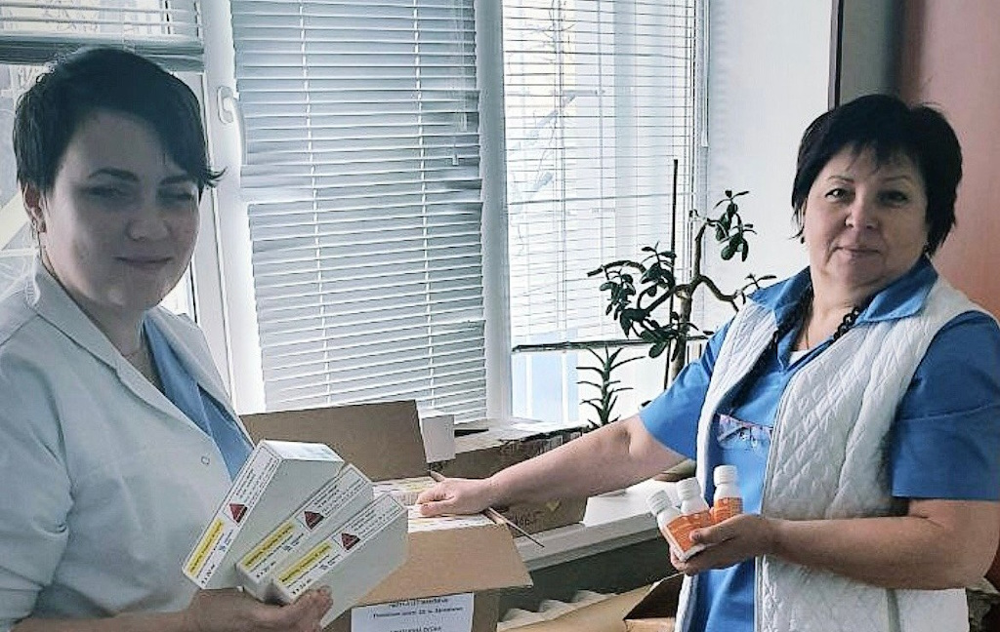
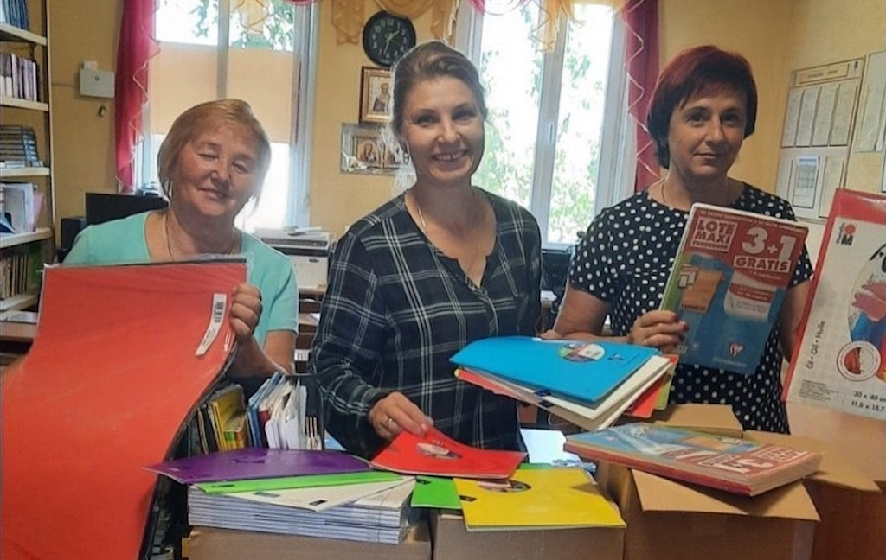
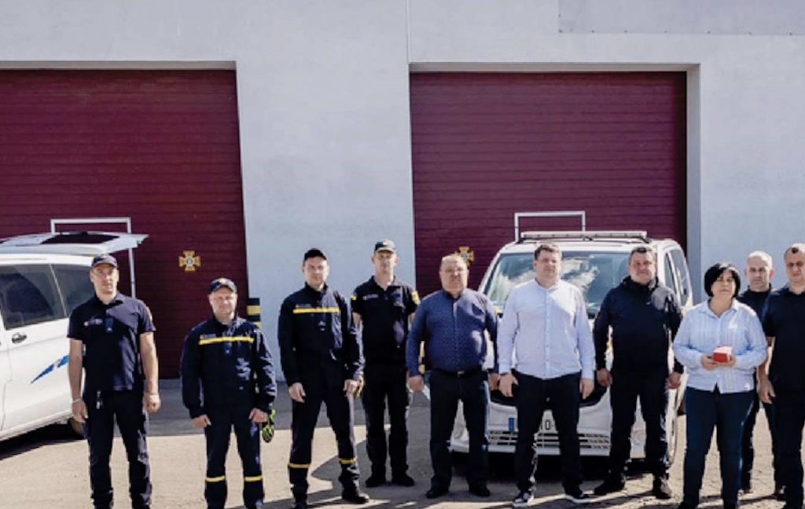

Accompagnement des patients et des réfugiés
Depuis le début du conflit, l’AMCFU est aux côtés des populations ukrainiennes les plus vulnérables. Notre équipe, composée de professionnels de santé et de bénévoles dévoués, met tout en œuvre pour apporter une aide médicale et humanitaire indispensable.
Comment soutenir ce projet ?
En quête d’actualités ? Découvrez nos bulletins d’information
Vous avez une question ?
Quelles actions concrètes réalisons-nous ?
Aide médicale directe sur place pour les populations locales et les déplacés internes
- Fourniture d’équipements médicaux
- Envoi d’ambulances
- Formation du personnel médical
L’AMCFU a expédié plus de 2000 tonnes de matériel médical et de médicaments aux hôpitaux ukrainiens, incluant des équipements de chirurgie, de réanimation, de diagnostic ainsi que des consommables essentiels pour assurer les soins de base et d’urgence.
Pour répondre aux besoins critiques de transport médical, l’AMCFU a acheminé plus de 140 ambulances en Ukraine, facilitant ainsi l’évacuation des blessés et le transport des patients vers les établissements de soins.
L’association a également pris en charge la formation des professionnels de santé ukrainiens, en mettant l’accent sur les compétences en médecine d’urgence, en traumatologie et en soutien psychologique, indispensables en temps de guerre.
Soutien aux déplacés internes en Ukraine et aux patients soignés en France
- Aide humanitaire
- Soutien psychologique
- Hébergement
En dehors des soins médicaux, l’AMCFU a apporté une aide humanitaire vitale aux réfugiés ukrainiens en France et aux orphelins en Ukraine, en distribuant de la nourriture, des vêtements et des produits d’hygiène pour améliorer leur quotidien dans ces circonstances difficiles.
Consciente de l’impact psychologique de la guerre et de l’exil, l’AMCFU a participé à la mise en place des programmes de soutien psychologique pour aider les réfugiés et les déplacés internes à surmonter les traumatismes qu’ils ont vécus, leur offrant ainsi un espace d’écoute et de guérison.
En France, l’AMCFU a également contribué à l’hébergement de certains patients, leur offrant ainsi un toit et un environnement sécurisé afin qu’ils puissent se rétablir
Cours FLENous avons mis en place des cours de français pour les réfugiés ukrainiens en France afin qu’ils puissent s’intégrer au mieux à la société française.
Coopération avec les institutions locales
- Partenariats avec les hôpitaux
- Collaboration avec les autorités locales
L’AMCFU a noué des partenariats stratégiques avec plusieurs hôpitaux ukrainiens, garantissant ainsi une meilleure coordination dans la livraison de matériel médical et dans les efforts de formation.
L’association travaille en étroite collaboration avec les autorités locales ukrainiennes pour identifier les besoins les plus urgents et ajuster ses actions en conséquence, assurant ainsi une réponse humanitaire efficace et adaptée.
Sensibilisation et levée de fonds pour l’Ukraine
- Campagnes de communication
- Organisation d’événements
Pour mobiliser les ressources nécessaires, l’AMCFU a mené de nombreuses campagnes de communication visant à sensibiliser le public à la situation dramatique en Ukraine et à collecter des fonds.
Afin de soutenir ses actions, l’association a également organisé divers événements, dont les recettes sont intégralement reversées à l’aide humanitaire et médicale en Ukraine.
Grâce à ces initiatives, l’AMCFU continue de jouer un rôle important dans la réponse française à la crise humanitaire engendrée par la guerre en Ukraine, apportant espoir et soutien à ceux qui en ont le plus besoin. Ensemble, nous aidons les populations fragilisées et sauvons des vies en Ukraine.